0201
(A)
0202
(A)
0203
(B)
0204
(D)
0205
(C)
0206
(B)
0207
(B)
0208
(D)
0209
(B)
0210
(C)
0211
(B)
0212
(D)
0213
(D)
0214
(A)
0215
(B)
0216
(A)
0217
(D)
0218
(C)
0219
(D)
0220
(A)
0221
(C)
0222
(C)
0223
(B)
0224
(B)
0225
(D)
0226
(A)
0227
(C)
0228
(B)
0229
1. 系统; 2. 过失; 3. 系统; 4. 随机
0230
误差 , 测定结果与真实值差异
偏差 , 平行测定结果相互接近程度
0231
系统
, 相对校准
0232
1. 系统误差; 2. 随机误差; 3.过失; 4. 过失
0233
过失 , 系统误差 , 过失 , 随机误差
0234
-2.5％
0235
不正确
因为单次测定结果的偏差和应当等于零,即
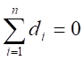
而上述测量
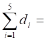
+0.04-0.02+0.01-0.01+0.06
= 0.08 ≠0
显然计算不正确
0236
15.8％
0237
标准差s , 总体平均值m
离散程度
, 集中趋势
0238
偶然(或随机) ; 集中趋势
; 真值 ; 分散程度
0239
t分布
正态分布
正负误差出现的概率相等;小误差出现的概率大,大误差出现的概率小,特大误差出现的概率很小。
0240
t分布,
t, 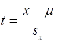
概率密度,
自由度,
f = n-1
0241
大, 小,
t , 正态 ,
低, 宽(或大), 好(或大)
0242
5.24%, 0.070%,
0.035%, (5.24±0.11)％
0243
置信区间: 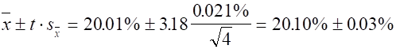
0244
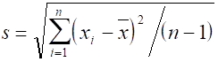
分散程度(或精密度)
0245
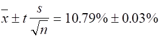
0246
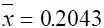
s = 4.3×10-4
CV = 2.1‰
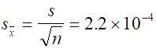
0247
t
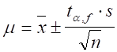
0248
置信区间
置信度(置信水平)
0249
(1) 60.65% ~ 60.71%
(2) 无
0250
20
增加试样质量, 适当减小标准溶液浓度
0251
标准试样, 标准方法, 加入回收法
0252
3, 10 g
0253
第二
, 3
0254
62.2%
0255
(1)
5.0; (2) 5.0000; (3) 5.0; (4)
5.00
0256
(1) 21
, (2) 3.5
0257
0.03256 ; 0.8725
; 1.034 ; 16.09
0258
二位
, 四位
0259
0.0160
, 22
0260
二
; 四 ; 无限
; 二
0261
3
, 4 , 5
, 2
0262
+0.27
0263
+3
0264
(20.01+20.04+20.04+20.05+20.06)
平均值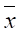
=
──────────────── %
5
= 20.04％
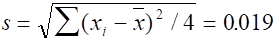
查表得置信度为95％的t值为2.78
所以 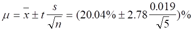
=
(20.04 ± 0.024)% ≈ (20.04 ± 0.02)%
0265
因为 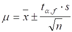
要使置信区间不超过s,则必须 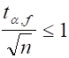
即 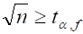
亦即 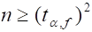
查有关t值表,当n=6时, f=5,
t2= 2.572 = 6.6,不满足以上条件
n=7时, f=6,
t2= 2.452 = 6, 满足以上条件
故至少应平行测定7次
0266
解: 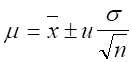
,
95％置信度时u=1.96
0.12
n = 1 , m = (9.56±1.96×───)% = (9.56±0.24)%
�� 1
0.12
n = 4 , m = (9.56±1.96×───)%
= (9.56±0.12)%
�� 2
0.12
n = 9 , m = (9.56±1.96×───)%
= (9.56±0.08)%
�� 3
上述计算结果说明:
在相同的置信度下,多次测定平均值的置信区间比单次测量的置信区间
要小,即所估计出的真值可能存在的范围较小(估计得准确),说明平均值
比单次测量值要可靠,更接近真值。测定次数愈多, 所估计出的真值范
围愈小, 平均值愈接近真值。
0267
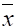
标 =
8.95% s标
= 0.060% f=2
新 =
9.02% s新
= 0.066% f=3
(9.02-8.95)% ─────
t
= ─────── Ö 3×4/(3+4)
= 1.43
(6.3×10-2)%
查t0.05,5 = 2.57 > t计算,新方法未引入系统误差,可以被
接受。平均值的置信区间为:
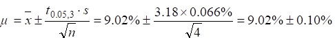
0268
40.00+40.15+40.16+40.18+40.20
(1) = ──────────────── = 40.14(%)
5
s
= 0.079%
│-40.00│
t = ───────
= 1.77 > t0.05,5(=1.67)
0.079
所以40.00值应该舍弃
(2) t检验:
40.15+40.16+40.18+40.20
�� = ───────────── = 40.17(%)
4
s = 0.022%
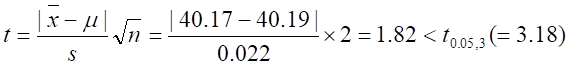
新方法不引起系统误差,可以被承认。
0269
m; 点(或定值)；m; 区间
0270
2.28%; 3
0271
c(1/5KMnO4)=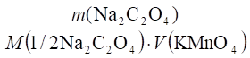
可简写为：c=k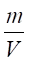
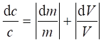
=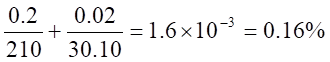
0272
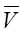
=24.64mL， SV=0.022 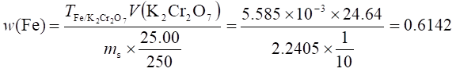
可将上式简写为：w=k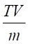
,
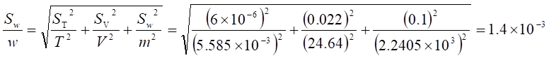
0273
(1)
n=6, 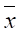
=60.56%, s=0.12%
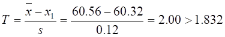
60.32应舍去
（2）n=5, =60.61%, s =0.036%
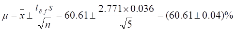
(3) 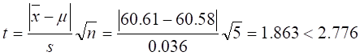
测量无系统误差
0274
1.678，1.678
0275
=， 5.6×10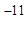
mol/L, 1.8×10－4mol/L
0276
=, 2.60
0277
三, 4.745
0278
二，7.6×10-3mol/L
0279
2.457,
2.456
0280
0.25%
0281
(D)
0282
2.500×10-2L或25.00mL
0283
1.19%
0284
32.2%
0285
(B)
0286
(D)
0287
0.2500g,
24.10mL
0288
5.5×10-10
0289
高，不一定
0290
(C)
0291
(D)
0292
解：=5.02, E=5.02-5.03=－0.01mg/L,
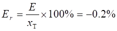
0293
解：（a）10mg试样含Br: 10×10%=1.0mg
相对误差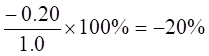
绝对误差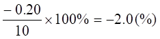
同理得: （b）－4.0%,－0.4(%) (C) －2.0%, －0.2(%)
0294
(C)
0295
系统误差，随机误差
0296
小，不一定
0297
随机，系统
0298
－0.02(%)，－1.5%
2201
(C)
2202
(A)
2203
(C)
2205
(B)
2206
(D)
2207
系统
2208
-0.05% , -0.09%
2209
不能,只能说不存在系统误差,但人眼判断颜色有±0.3pH(或pM)的不确定性,总有随机误差存在,故不会为零。
2210
B,A和C,D
2211
-0.29×10-3
Er
= ────────×100%=-0.24%
0.20×60%
2212
解: (a) 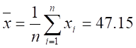
%
(b) 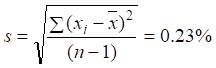
(c) (s/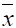
)×100% = 0.48%
(d) E = 47.15%-(35.45/74.55)×100%
= -0.40%
(e) Er = (-0.40/47.55)×100% = -0.84%
2213
解: =
0.029 (%)
E
=-xT = 0.029-0.030 = -0.001 (%)
Er
= (E/xT)×100%
= (-0.001/0.030)×100% = -3.3%
2214
(D)
2215
(D)
2216
(B)
2217
(B)
2218
(C)
2219
(A)
2220
总体平均值,总体标准差,
y =
[1/(s(2p)1/2)]exp[-(x-m)2/(2s2)]
2221
m, s
2222
(C)
2223
(D)
2224
(A)
2225
(D)
2226
(B)
2227
(D)
2228
(C)
2229
(C)
2230
(D)
2231
好(或高),小,减小,变化,4～6
2232
解: =
0.1085(mol/L)
d
= (1/3)(0.0002+0.0001)
=
0.0001(mol/L)
d/= (0.0001/0.1085)×100% = 0.09%
2233
解: 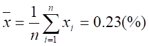
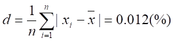
(d/)×100% = (0.012/0.23)×100% = 5.2%
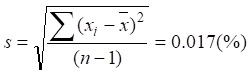
CV = (s/)×100% = 7.4%
2234
解: (a) m = ±ts/n1/2 = 58.62±2.02×0.11/61/2
= (58.62±0.09
)(%)
(b) m = 58.62±3.18×0.11/41/2 = (58.62±0.17)(%)
2235
解: Q = (xn-xn-1)/(xn-x1)
= (29.24-29.08)/(29.24-28.97) = 0.59
Q(0.90,4) = 0.76>0.59
以10%的危险率保留29.24这个值
= 29.08, s = 0.12
m = ±ts/n1/2
= 29.08±2.35×0.12/41/2
= (29.08±0.14)(%)
90%的把握认为置信区间为(28.94~29.22)%
2236
解: = 10.79
Er = [(-xT)/xT]×100%
=
[(10.79-10.77)/10.77]×100% = 0.19%
s
= 0.042
m = ±ts/n1/2
= 10.79±2.31×0.042/91/2 = (10.79±0.03)(%)
即10.76%~10.82%
有95%的把握断定区间(10.76%~10.82%)将把纯明矾含铝量的真值包含在内
2238
解: =
40.50, s = 0.06
P
= 90%: t(0.10,3) = 2.35
m = ±ts/n1/2
= 40.50±2.35×0.06/41/2 =( 40.50±0.07)(%)
P
= 95%: t0.05,3 = 3.18
m = ±ts/n1/2
= 40.50±3.18×0.06/41/2
= (40.50±0.10)(%)
2239
解: P = 90%: m = ±us/n1/2
= 51.46±1.64×0.041/31/2
= (51.46±0.04)(%)
P = 95%: m = 51.46±1.96×0.041/31/2
= (51.46±0.05)(%)
置信度提高,判断的把握增加,但置信区间增大了。
2240
解: t = (|-m|)/(s/n1/2)
=
(0.109-0.105)/(0.008/41/2) = 1.00
t0.95,3
= 3.18>1.00
��与μ之差不显著,无系统误差存在
t
= 0.004/(0.008/201/2) = 2.24
t0.95,20
= 2.09<2.24
��与μ之差显著,有系统误差存在
2241 解: = 0.158
(mg/mL)
s
= 4.0×10-3(mg/mL)
m = ±ts/n1/2
= 0.158±3.18×4.0×10-3/41/2
= (0.158±0.006)(mg/mL)
2242
解: 置信区间为m = ±us/n1/2
故us/n1/2
= 0.50
n1/2
= 1.96×0.80/0.50
n≈10(次)
2243
解: u = (-m)/(s/n1/2)
= (0.532-0.520)/(0.07/41/2) = 0.343
u0.95
= 1.96>0.343 表明与m之差不显著
分析结果合格
2244
解: =
7.6mmol/L s = 0.084mmol/L
CV
= (s/)×100% = 1.1%
m = ±ts/n1/2
= 7.6±2.26×0.084/101/2
= (7.6±0.06) (mmol/L)
t = (-m)/(s/101/2)
= (7.6-6.1)/(0.084/101/2) = 33.88
t0.95,9
= 2.26<33.88
与m之差显著,有95%把握说此人血糖含量不正常。
2245
解: 先检验s1与s2差异是否显著
F
= s12/s22 = 1212/722
= 2.94
a = 0.10,双边检验,F表值用F0.05,5,4 = 6.26>2.94,差异不显著
s
= {[s12(n1-1)+s22(n2-1)]/(n1+n2-2)}3/2
= 10
t
= [(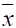
1-2)/s][n1n2/(n1+n2)]1/2
= 1.32
t0.10,9
= 1.83>1.32 表明1与2无显著性差异。
2246: 解: (a) F = s12/s22
= 1.40
F0.05,19,19 = 2.18>1.40
s1与s2不显著,作此判断的把握为90%(双边检验)
(b)
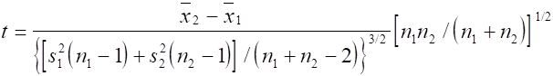
t0.95,38 = 2.02>1.31
1与2差异不显著,作此判断的把握为95%
2247
解: 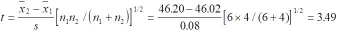
t0.95,8
= 2.31
t
> t0.95,8 , 1与2有显著性差异
2248
解: Q = (x4-x3)/(x4-x1)
= (14.64-14.46)/(14.64-14.41) = 0.78
表值Q0.90,4 = 0.76
Q
> Q0.90,4 故14.64应舍弃
2249
解: P = 95% u
= 1.96
(a) m = ±us = (5.9±1.96×0.25)×10-10 = (5.9±0.5)×10-10
即 5.4×10-10~6.4×10-10
(b)
m = ±us/n1/2
= (5.9±1.96×0.25/31/2)×10-10 = (5.9±0.3)×10-10
即 5.6×10-10~6.2×10-10
2250
解: s = s = 0.05
t
= (│1-2│/s)[n1n2/(n1+n2)]1/2
= [(0.16-0.12)/0.05][5×5/(5+5)]1/2 = 1.26
因为s = s 所以 f = ∞
t0.95,∞ = 1.96>1.26
1与2差异不显著,有95%的把握相信两个样来自同一总体。
2251
解: 0
= 0.42 s0 = 0.25 n0
= 5
= 0.64 s
= 0.25 n = 5
检验与0差异是否显著,单边检验
t
= [(-0)/s][n0n/(n0+n)]1/2
= [(0.64-0.42)/0.25][5×5/(5+5)]1/2 = 1.39
t0.10,8
= 1.86
t
< t0.10,8, 不显著, 95%的把握未喷洒DDT。
2252
(C)
2253
(B)
2254
(C)
2255
0.2
2256
解: 设称样x g 则
-0.5×10-3
────── =
-0.1%
x×5.0%
x = 10(g)
最少要称样10g
2257
进行对照试验,回收试验,空白试验,校准仪器和用适当的方法对分析结果校正。
2258
解: 二次测定平衡点最大极值误差为±0.2mg
±0.2×10-3
Er1 = ────────×100% = ±0.4%
0.05
±0.2×10-3
Er2 = ────────×100% = ±0.1%
0.2
±0.2×10-3
Er3 = ────────×100% = ±0.02%
1.0
说明称样量越大,相对误差越小,定量分析要求误差小于0.1%,称样量大于0.2g即可,过大对试样处理操作不便。
2259
(C)
2260
(D)
2261
(D)
2262
(B)
2263
(B)
2264
(D)
2265
1.8×10-5
2266
(C)
2267
(C)
2268
(C)
2269
(C)
2270
10.09%
2271
0.2548g
2272
0.0255
2273
三位,9.84×10-3
2274
系统
2275
系统
2276
(C)
2277
(C)
2278
(C)
2279
(C)
2280
(D)
2281
(A)
2282
0.500或±0.001
2283
标准偏差
2284
解: 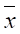
=2.7×10-8 mol/L, s
=0.29×10-8
mol/L
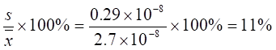
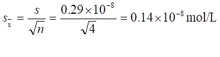
2285
解：=1.007,
d1=-0.002, d2=0, d3=0.001,
d4=-0.001, d5=0.002
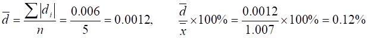
2286
解：=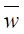
(N)=16.62%,
d1= -0.10%, d2=0.25%, d3=-0.21%, d4=0.08%=
s==0.20%
2287
0, 不为0（或填各偏差绝对值之和除以测定次数）
2288
解：=0.099%
=（0.002+0.001+0.001+0.003+0.001）/5=0.0016%
s==0.002%
,
2289
(B)
2290
解：=0.1026 mol/L, s=0.00046
mol/L
T0.05,4=1.46<1.52 显著，将0.1019舍去
然后求三次测量值的平均值和标准偏差
=0.1028mol/L, s=0.0001mol/L
2291
解=79.31%, s=0.094%
2292
解: 三次：
m =±=26.44
=（26.44±0.16）(mg/mL)
七次 m=±=26.44
=(26.44±0.10) (mg/mL)
2293
解=60.55%, s=0.041%
即：60.50%~60.60%，真值
xT= m=
有95%的把握认为该区间不包含真值在内。
2294: 解
m=0.64±
2295: 解
(1)
Q=,
Q0.90,5=0.64<0.75 差异显著
37.15%这个值应舍去
（2）去掉37.15%后求四次测定的平均值，=39.32%, s=0.021%
2296
解 =1.49%, s=0.058%
即1.43%~1.55%，有90％的把握该区间包含真
值在内
2297
解: m=±，
=m±=2.75
即：2.70% ~2.80%
2298
解:=0.1mmol/L, , 需测定五次
4201
解: m =±,
=2.62%－2.52% = 0.10%,
4202
解: m =±
4203
两次：= 1.14%, s=0.021% m =
五次:=1.13%, s = 0.022%
m =
两次测定比五次的置信区间大
4204
解: p=0.95% (α=0.05)
m=±
=62.32
p=0.99%(α=0.01)
m
=±
m
= 62.32结论：置信度高， 置信区间大
4205
解: = 31.27%, s=0.055%
90%:
m= 95%:
m =
4206
解：先检验 s1与s2是否相等。双边检验，用95%的F表
（F0.05,3,2） 差异不显著
差异不显著
s p ==
t计
==
双边检验t0.10,5=2.02> t计, 90%的把握认为两个平均值无显著性差异
4207
解：=1.47%，s=0.053%
t计=
双边检验t0.05,5=2.57> t计
95%的把握认为新方法平均值与真值无显著性差异，新方法可行。
4208
解：1=56.11%，s1=0.032%，n1=3, 2=55.95%，s2=0.060%, n2=3
置信度90%，F0.95,2,2=19.00>F计, 不显著
sp=
=（%）
t计=== 4.08
置信度95%，单边检验用90% 双边t表，t0.10,4=2.13<t计
95%把握认为滴定法结果偏低。
4209
解：=4.96%，s=0.11%，
T0.05,5=1.67>T计，保留4.80这个值
t0.05,4=
2.78< t计, 有显著性差异，
有95%的把握认为该分析方法存在系统误差。
4210
解：格鲁布斯法： =20.06，s=0.073,
=20.06，s=0.073,
T计=
T0.05,6=1.82< T计, 应舍去
Q检验法：Q==
Q0.95,6 = 0.64< Q计, 应舍去
两种方法都认为20.20为异常值，置信度是95%。
4211
解：
5次：t0.05,4=2.78>t计, 不显著。
有95%的把握认为该分析方法不存在系统误差。
20次：t0.05,20=2.09< t计 , 显著
有95%的把握认为该分析方法存在系统误差
4212
解：=0.072mg/L，s=0.0079mg/L
单边检验，t0.10,7=1.90<2.15, 显著
t0.05,7=2.36>2.15, 不显著
显著水平为0.10时，此人血铅含量高。
若显著水平为0.05时，则此人血铅含量不高。
4213
解：=2.71%，s=0.07%
,
单边检验，t0.10，3=2.35
>t计, 不显著
有95%的把握认为结果不偏低
4214
解：
单边，F0..05，,3，3=9.28>5.44,差异不显著
sp=
=(%)
=
双边：t0.10,6 = 1.94<t计, 90%把握认为两种方法间存在系统误差。
4215
解：
s=0.10%
4216
解：90%：95%：结论：置信度高时置信区间大。
4217
解： ，
，
n=4, t0.10,3=2.35, t2=5.52>4
n=5, t0.10,4,=2.13, t2=4.54<5,
五次，
n=2, t0.10,1=6.31,
=9.95>2,
n=3, t0.10,2=2.92,
=2.13<3, 三次，
结论：相同置信度时，若置信区间大，平行测定次数可少些。
4218
解：=1.23%, s=0.059%
m= ±1.23
±1.23
4219
解:
90%：n=4,t0.10,3=2.35,
t2=5.5>4
n=5,
t0.10,4=2.13, t2=4.5<5, 五次
95%：n=6, t0.05,5=2.57, t2=6.6>6
n=7, t0.05,6=2.45, t2=6.0=6
七次
结论：当要求置信区间大小一定时，置信度越高平行测定次数越多。
4220
解：
=2.71%, s=0.070%,
p=95% (a=0.05)
2.60% ~2.82%, 95%的把握该区间不包含真值在内。
p=99% (a=0.01)
2.51% ~2.91%, 99%的把握该区间包含真值在内。
4221
解:
单边检验，概率=0.45，u0.05=1.65 < u计
95%把握认为杂质含量明显降低。
4222
解：s1=0.054%, s2=0.056%,
=1.08
双边检验置信度90%，用95%的单边F表, F0.05,2.,3=9.55>F计
有90%的把握认为两种方法的精密度无显著性差异。
4223
解：
双边检验，90%置信度用95%的单边F表, F0.05,4，5=5.19>F计
有90%的把握认为两种方法的精密度无显著性差异。
4224
解：=0.2037,
s=0.00065，
t0.05,3=3.18> t计, 无显著性差异。
检验0.2046：=0.2036,
s=0.00057，
T计=
0.2046这个值应舍去。
 =0.2034, s=0.00022，
=0.2034, s=0.00022，
t计=
t0.05,3=3.18<t计
4225
解：=0.2037mol/L, s=0.00065mol/L，0.2046mol/L保留
五次测定：=0.2036mol/L,
s=0.00057mol/L,
T计=
T0.05,5=1.67<T计
有95%的把握认为0.2046 mol/L这个值应舍去。
舍掉后 =0.2034mol/L,
s=0.00022mol/L
(mol/L)
4226
解：三次：=48.38%,
s=0.091%，
T计=
保留
四次：=48.40%, s=0.079%
T计=
95%的把握认为48.28%这个值应舍去。
舍掉后 =48.44%, s=0.015% ，
m=t计=
t0.05,2=4.30＜t计, 有95%的把握认为平均值与合格值有显著性差异。
4227
解：=5.07%,
s=0.05%
单边检验a=0.05, 用90%的双边t表t0..10,3=2.35<t计
有显著性差异, 有95%把握认为醋酸含量明显偏高，需重新勾兑。
4228
解：1=2.38%，s1=0.068%，n1=4, 2=2.46%，s2=0.074%, n2=4
双边检验, 90%置信度用95%的单边F表, F0.05，3，3=9.28>F计
无显著性差异。求合并方差(%)
=
t0.10,6 = 1.94>t计 90%把握认为两种方法间无显著性差异。
4229
解：
单边检验，u0.10=1.64<u计
95%把握认为纯度有明显提高。
4230
解：（1）=1.28%
Ea=1.28%-1.31%= -0.03%
Er=
(2) =1.28%, s=0.015%
t0.05,2
= 4.30> t计, 有95%的把握认为平均值与标准值无显著性差异。
4231
(D)
4232
(D)
4233
（D）
4234
(C)
4235
（C）
4236
（B）
4237
（D）
4238
（C）
4239
（C）
4240
解：先计算方括号内：
原式=，
结果为：1.7（±0.2）×10-6
4241
解：SR==0.16
R=396.3（±0.2）
4242
相对误差：
绝对误差： Ea=0.035R
= 0.035×0.010406 = 0.0004
校正值： C=
-Ea= -0.0004 结果为： 0.0104－0.0004
4243
解： Sv1=
S1 = 0.02 mol/L Sv22=
S22 + S22 = 0.012 +
0.012 = 2×0.012（mol/L）2
Sc12= c12×1.14×10-6
= 0.12502×1.14×10-6
= 1.78×10-8 (mol/L)2
Sc1 = 1.3×10-4 (mol/L)
c1= c(NaOH)=
(0.1000±0.0001)(mol/L)
4244
解：（a）SR =
(b)
(c) R = 23.8(±0.2)
4245
解：
4246
解：
(1) Ea = 0.03
+ (-0.001)－(-0.01) =
0.039
R = 0.57(+0.04)
(2) ,
Ea = 0.0312×(-0.022) = - 0.0007
R = 0.0312 (-0.0007)
4247
(B)
4248
(B)
4249
(A)
4250
(B)
4251
(C)
4252
(A)
4253
(A)
4254
(B)
4255
(C)
4256
(D)
4257
(A)
4258
(D)
4259
(B)
4260
(B)
4261
(C)
4262
(C)
4263
(D)
4264
(A)
4265
(C)
4266
(C)
4267
(D)
4268
(A)
4269
(B)
4270
(D)
4271
(C)
4272
(A)
4273
(C)
4274
(A)
4275
(C)
4276
(C)
4277
(B)
4278
(B)
4279
(A)
4280
(A)
4281
(A)
4282
(D)
4283
(D)